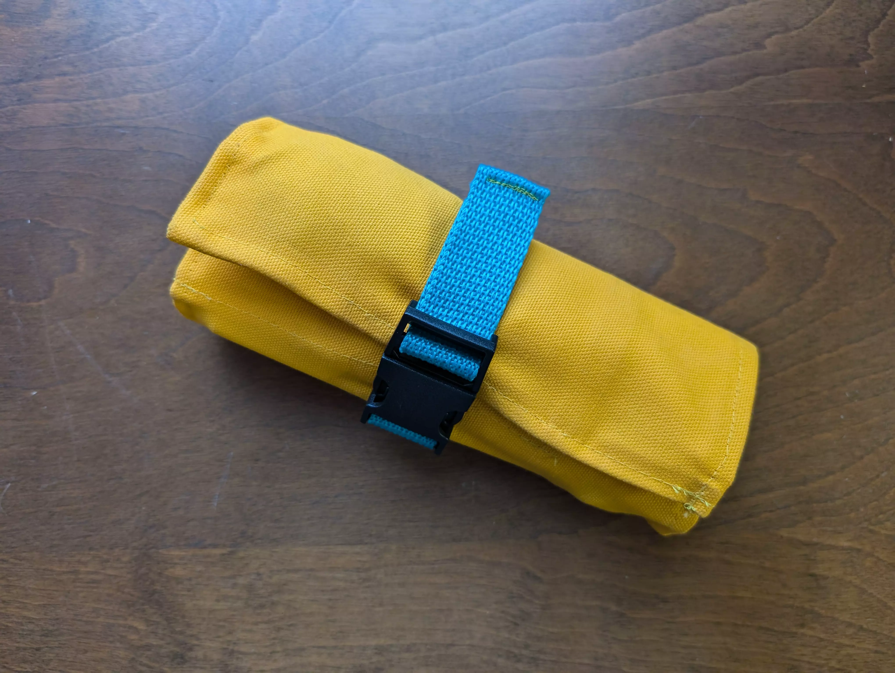

DIY Tool Roll

I’ve had a bunch of tools jingling around in a bag I keep in the basket of my bike, and I decided it was time to make something to keep them quiet and secure.
I loosely followed this video on YouTube for the general construction, though I did deviate a bit (specifically on the top flap).
The roll is made from yellow duck canvas and polyester thread, along with a zipper, some webbing, and a plastic clip.

It currently holds several wrenches, a tire pressure gauge, a multitool that includes flat head and phillips screw drivers and allen keys, as well as some nitrile gloves in the zipper pouch.
There are two small tweaks I might make in the future. First, I’d like to take some bulk off of the left side of the top flap - right now it gets bunched up when you roll everything up. And second, I’d like to reposition the clip so it doesn’t lay directly on the edge of the roll.